RGB (202, 201, 211) · difference 54.5
RGB (208, 212, 218) · difference 40.8
RGB (214, 209, 216) · difference 39.9
RGB (214, 215, 220) · difference 34.2No distinct shadow
No distinct cast shadow visible on the backdrop; review for consistency.

RGB (255, 255, 255) · difference 33.0
RGB (216, 215, 220) · difference 32.9
RGB (216, 214, 222) · difference 32.5
RGB (216, 214, 226) · difference 30.7
RGB (216, 217, 222) · difference 30.7
RGB (216, 218, 223) · difference 29.7No distinct shadow
No distinct cast shadow visible on the backdrop; review for consistency.
RGB (218, 218, 222) · difference 28.9
RGB (218, 216, 225) · difference 28.6
RGB (214, 220, 228) · difference 27.9
RGB (220, 218, 224) · difference 26.6
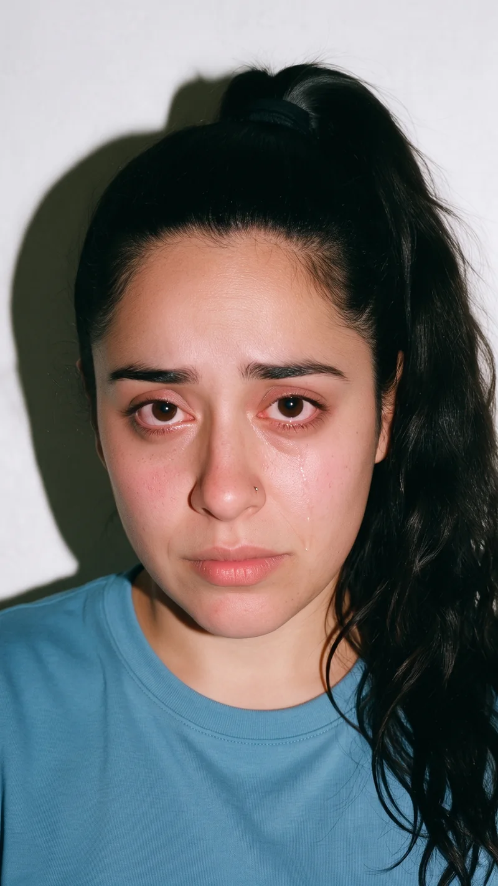
RGB (220, 219, 224) · difference 26.0
RGB (221, 218, 224) · difference 26.0
RGB (221, 218, 224) · difference 26.0
RGB (220, 220, 224) · difference 25.5
RGB (222, 219, 224) · difference 24.8
RGB (221, 220, 225) · difference 24.3
RGB (224, 220, 224) · difference 23.2
RGB (223, 221, 224) · difference 23.1No distinct shadow
User flagged: missing drop shadow; background reads gray.
RGB (222, 222, 226) · difference 22.0
RGB (224, 220, 226) · difference 22.0No distinct shadow
No distinct cast shadow visible on the backdrop; review for consistency.
RGB (222, 222, 226) · difference 22.0
RGB (223, 222, 227) · difference 20.8Weak / obscured shadow
Shadow is faint, tight to the silhouette, or obscured by hair/pose; compare before deciding.
RGB (224, 224, 228) · difference 18.5
RGB (224, 224, 228) · difference 18.5
RGB (224, 224, 229) · difference 18.0
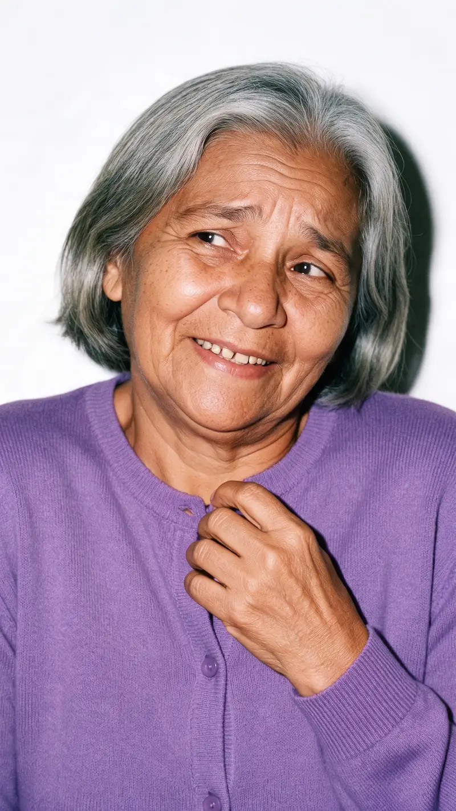
RGB (246, 245, 248) · difference 17.9Weak / obscured shadow
Shadow is faint, tight to the silhouette, or obscured by hair/pose; compare before deciding.
RGB (224, 224, 230) · difference 17.5
RGB (224, 225, 230) · difference 17.0
RGB (224, 226, 230) · difference 16.5

RGB (244, 245, 247) · difference 16.3
RGB (226, 226, 228) · difference 16.2Weak / obscured shadow
Shadow is faint, tight to the silhouette, or obscured by hair/pose; compare before deciding.
RGB (244, 242, 248) · difference 15.1Weak / obscured shadow
Shadow is faint, tight to the silhouette, or obscured by hair/pose; compare before deciding.
RGB (244, 244, 246) · difference 15.1
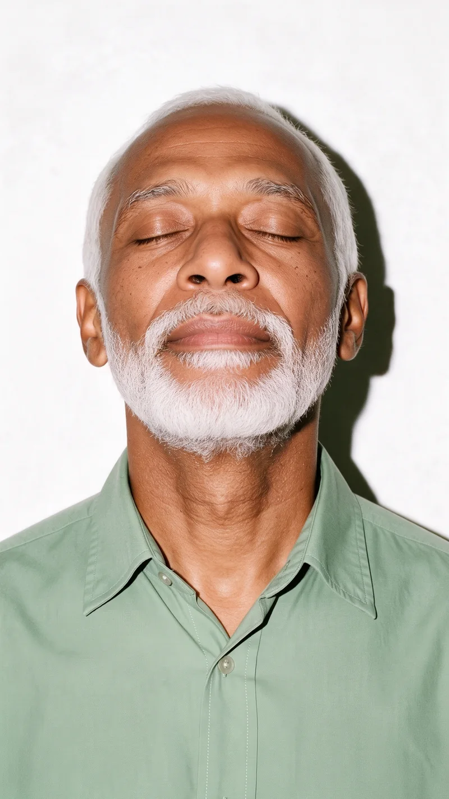
RGB (245, 244, 244) · difference 14.7
RGB (224, 228, 232) · difference 14.7
RGB (228, 224, 231) · difference 14.6
RGB (226, 226, 232) · difference 14.1
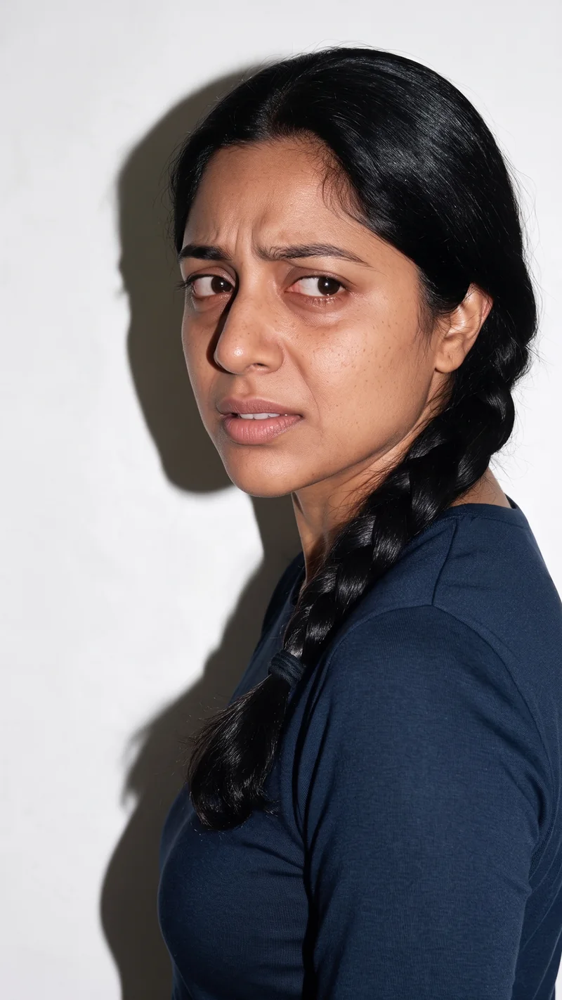
RGB (228, 227, 230) · difference 13.3
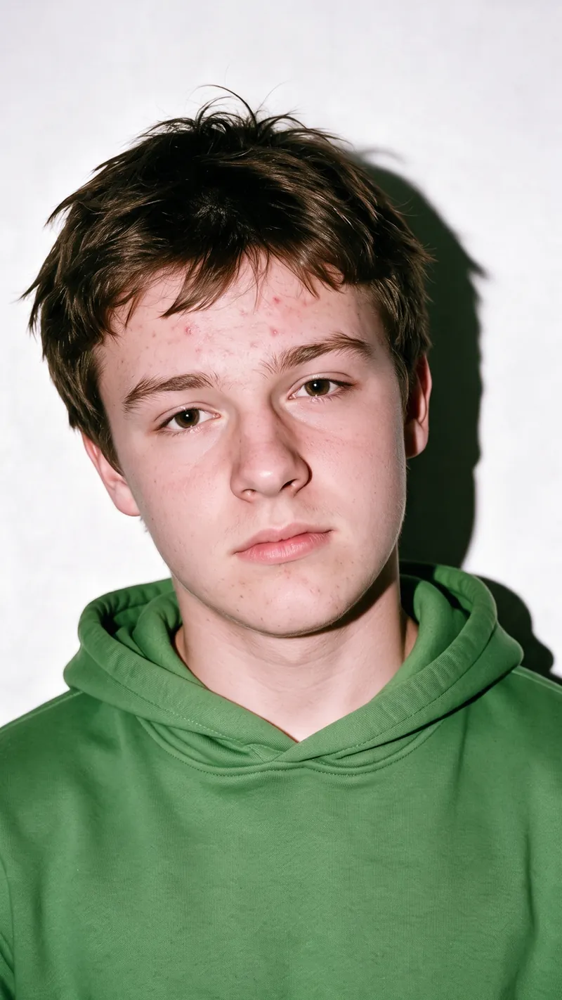
RGB (228, 226, 232) · difference 12.8
RGB (242, 242, 246) · difference 12.8Weak / obscured shadow
Shadow is faint, tight to the silhouette, or obscured by hair/pose; compare before deciding.
RGB (228, 228, 230) · difference 12.8
RGB (242, 242, 246) · difference 12.8
RGB (228, 227, 232) · difference 12.2Weak / obscured shadow
Shadow is faint, tight to the silhouette, or obscured by hair/pose; compare before deciding.
RGB (242, 242, 244) · difference 11.7
RGB (242, 242, 244) · difference 11.7
RGB (242, 242, 244) · difference 11.7
RGB (242, 240, 245) · difference 11.0
RGB (242, 241, 244) · difference 11.0
RGB (229, 229, 232) · difference 10.5
RGB (241, 240, 245) · difference 10.5
RGB (230, 228, 232) · difference 10.4Weak / obscured shadow
Shadow is faint, tight to the silhouette, or obscured by hair/pose; compare before deciding.
RGB (241, 241, 243) · difference 9.9
RGB (230, 228, 233) · difference 9.8
RGB (240, 240, 244) · difference 9.4
RGB (230, 228, 234) · difference 9.4No distinct shadow
No distinct cast shadow visible on the backdrop; review for consistency.
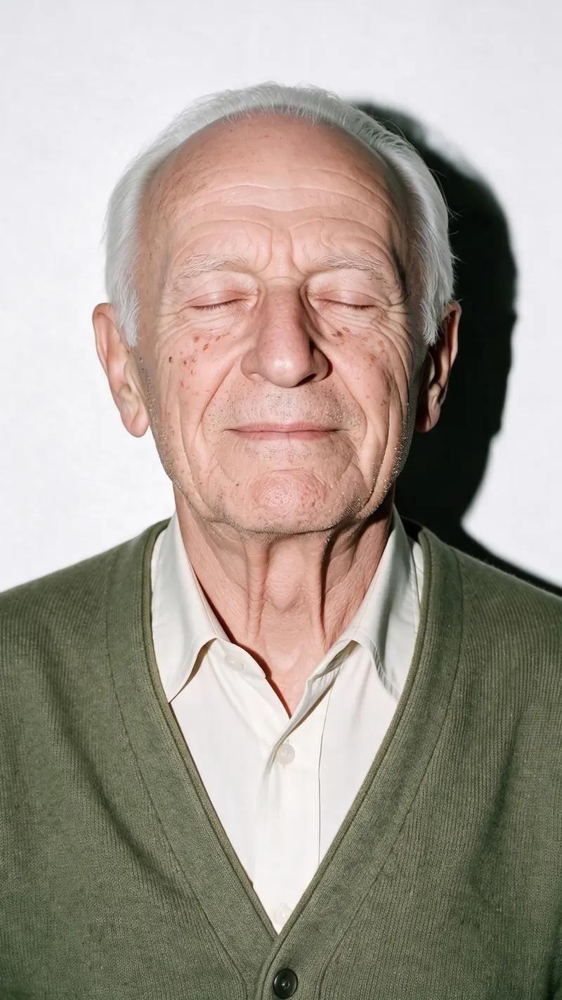
RGB (230, 228, 234) · difference 9.4
RGB (230, 228, 234) · difference 9.4
RGB (241, 241, 241) · difference 9.1Weak / obscured shadow
Shadow is faint, tight to the silhouette, or obscured by hair/pose; compare before deciding.
RGB (232, 229, 232) · difference 8.8
RGB (230, 229, 234) · difference 8.8
RGB (240, 239, 244) · difference 8.8
RGB (240, 239, 244) · difference 8.8
RGB (238, 240, 244) · difference 8.7
RGB (238, 240, 244) · difference 8.7Weak / obscured shadow
Shadow is faint, tight to the silhouette, or obscured by hair/pose; compare before deciding.
RGB (238, 240, 244) · difference 8.7
RGB (238, 240, 244) · difference 8.7
RGB (238, 238, 245) · difference 8.3
RGB (240, 240, 242) · difference 8.2
RGB (232, 230, 232) · difference 8.2
RGB (230, 230, 234) · difference 8.2
RGB (240, 240, 242) · difference 8.2Weak / obscured shadow
Shadow is faint, tight to the silhouette, or obscured by hair/pose; compare before deciding.
RGB (240, 238, 244) · difference 8.2
RGB (233, 228, 234) · difference 7.8
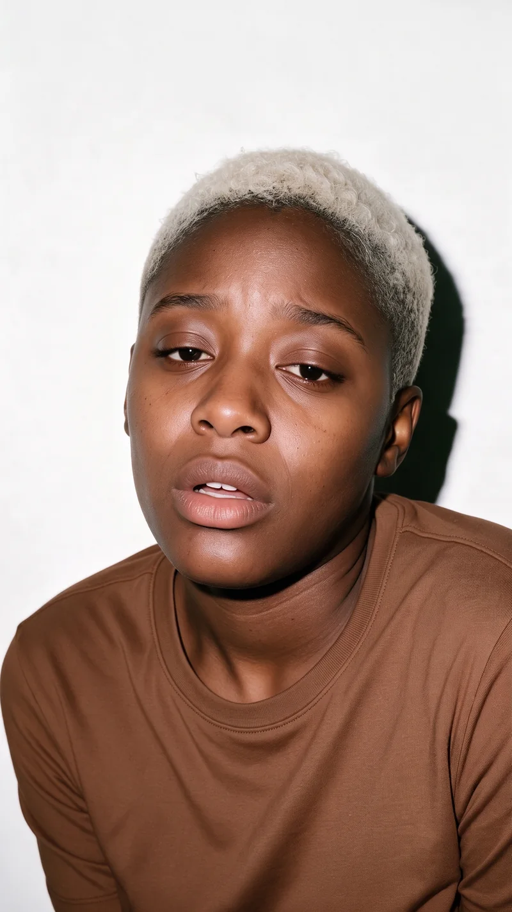
RGB (240, 240, 240) · difference 7.5
RGB (238, 240, 242) · difference 7.5
RGB (240, 238, 243) · difference 7.5
RGB (240, 239, 242) · difference 7.5
RGB (240, 240, 240) · difference 7.5
RGB (240, 239, 242) · difference 7.5Weak / obscured shadow
Shadow is faint, tight to the silhouette, or obscured by hair/pose; compare before deciding.
RGB (241, 238, 242) · difference 7.5Weak / obscured shadow
Shadow is faint, tight to the silhouette, or obscured by hair/pose; compare before deciding.
RGB (231, 230, 235) · difference 7.1
RGB (239, 238, 243) · difference 7.1
RGB (232, 230, 234) · difference 6.9Weak / obscured shadow
Shadow is faint, tight to the silhouette, or obscured by hair/pose; compare before deciding.
RGB (240, 238, 242) · difference 6.9No distinct shadow
No distinct cast shadow visible on the backdrop; review for consistency.
RGB (240, 238, 242) · difference 6.9
RGB (240, 238, 242) · difference 6.9
RGB (240, 239, 240) · difference 6.7Weak / obscured shadow
Shadow is faint, tight to the silhouette, or obscured by hair/pose; compare before deciding.
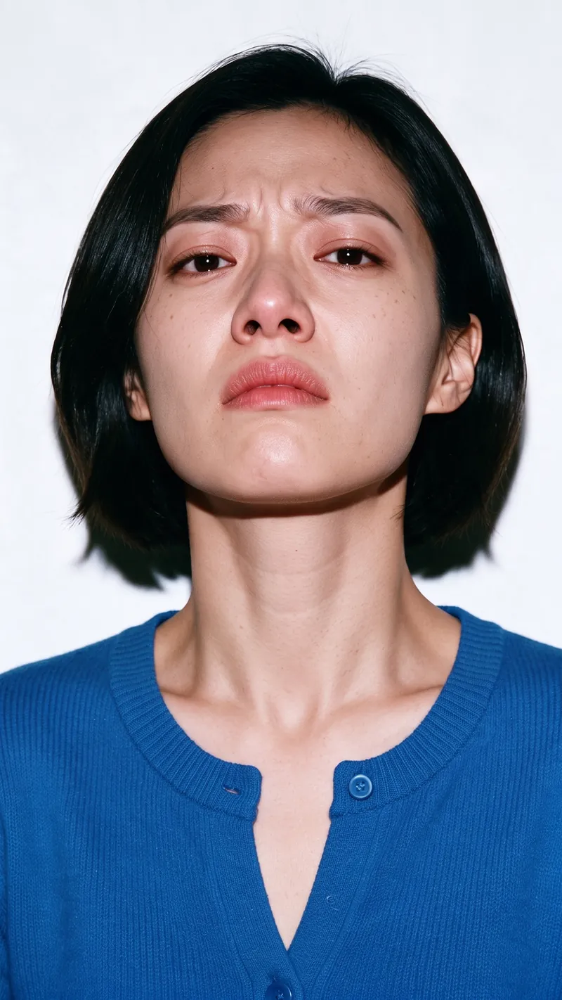
RGB (234, 238, 243) · difference 6.7Weak / obscured shadow
Shadow is faint, tight to the silhouette, or obscured by hair/pose; compare before deciding.
RGB (231, 230, 237) · difference 6.5
RGB (239, 238, 242) · difference 6.4
RGB (239, 238, 242) · difference 6.4
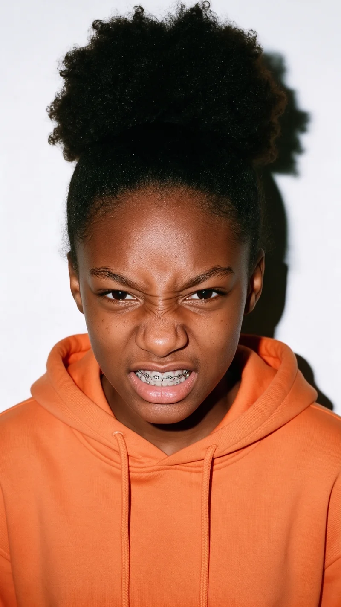
RGB (230, 232, 237) · difference 6.4
RGB (239, 239, 240) · difference 6.2
RGB (232, 230, 236) · difference 6.0
RGB (238, 238, 242) · difference 6.0
RGB (238, 238, 242) · difference 6.0
RGB (238, 238, 242) · difference 6.0

RGB (232, 232, 234) · difference 6.0
RGB (238, 238, 242) · difference 6.0
RGB (232, 230, 236) · difference 6.0
RGB (238, 238, 242) · difference 6.0
RGB (238, 238, 242) · difference 6.0
RGB (232, 232, 234) · difference 6.0Weak / obscured shadow
Shadow is faint, tight to the silhouette, or obscured by hair/pose; compare before deciding.
RGB (236, 238, 242) · difference 5.7
RGB (236, 238, 242) · difference 5.7Weak / obscured shadow
Shadow is faint, tight to the silhouette, or obscured by hair/pose; compare before deciding.
RGB (236, 238, 242) · difference 5.7
RGB (238, 237, 242) · difference 5.4
RGB (238, 237, 242) · difference 5.4Weak / obscured shadow
Shadow is faint, tight to the silhouette, or obscured by hair/pose; compare before deciding.
RGB (233, 230, 236) · difference 5.4
RGB (238, 237, 242) · difference 5.4
RGB (232, 232, 236) · difference 4.9Weak / obscured shadow
Shadow is faint, tight to the silhouette, or obscured by hair/pose; compare before deciding.
RGB (238, 238, 240) · difference 4.9
RGB (232, 232, 236) · difference 4.9
RGB (238, 238, 240) · difference 4.9
RGB (232, 232, 236) · difference 4.9
RGB (233, 232, 235) · difference 4.7
RGB (232, 232, 238) · difference 4.5

RGB (238, 237, 240) · difference 4.1
RGB (232, 234, 238) · difference 4.0
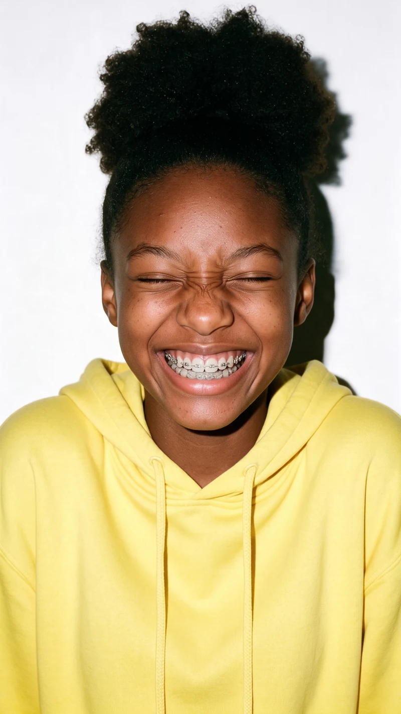
RGB (237, 236, 241) · difference 3.7
RGB (233, 232, 237) · difference 3.7Weak / obscured shadow
Shadow is faint, tight to the silhouette, or obscured by hair/pose; compare before deciding.
RGB (237, 236, 241) · difference 3.7
RGB (237, 236, 241) · difference 3.7
RGB (234, 233, 235) · difference 3.7Weak / obscured shadow
Shadow is faint, tight to the silhouette, or obscured by hair/pose; compare before deciding.
RGB (234, 234, 235) · difference 3.6
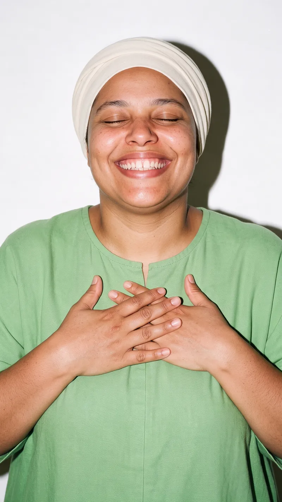
RGB (234, 232, 236) · difference 3.5
RGB (238, 236, 240) · difference 3.5No distinct shadow
No distinct cast shadow visible on the backdrop; review for consistency.
RGB (237, 236, 240) · difference 3.0
RGB (234, 233, 236) · difference 3.0
RGB (237, 236, 240) · difference 3.0No distinct shadow
No distinct cast shadow visible on the backdrop; review for consistency.
RGB (236, 236, 240) · difference 2.8
RGB (236, 236, 240) · difference 2.8
RGB (235, 235, 240) · difference 2.4
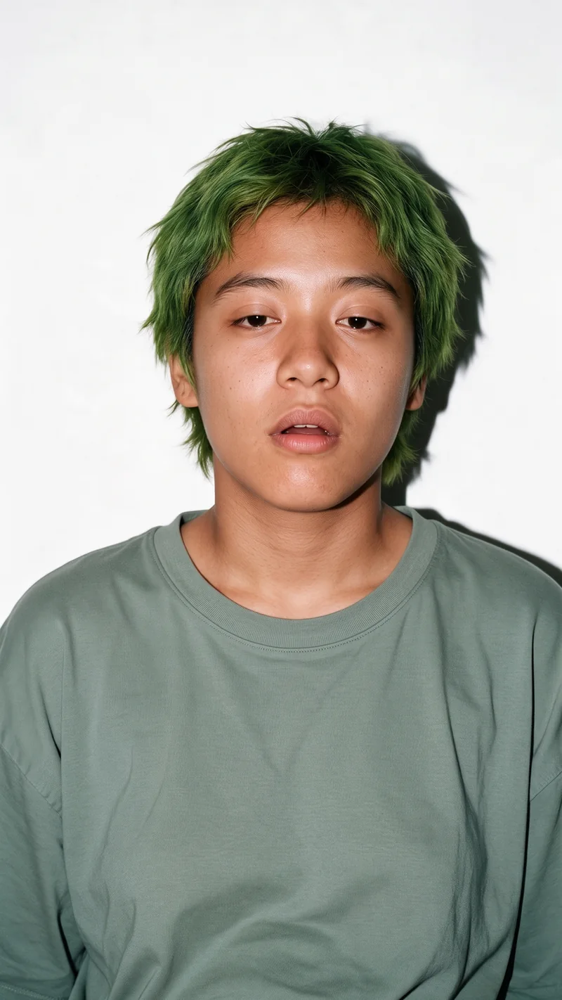
RGB (237, 236, 239) · difference 2.4
RGB (236, 235, 240) · difference 2.2Weak / obscured shadow
Shadow is faint, tight to the silhouette, or obscured by hair/pose; compare before deciding.
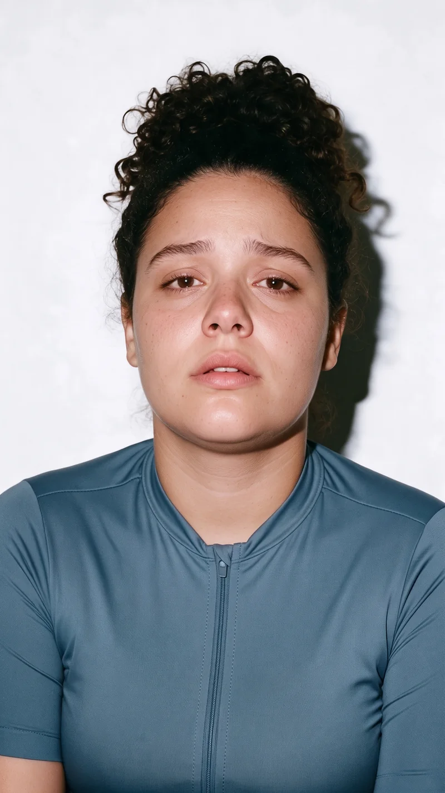
RGB (234, 233, 238) · difference 2.2
RGB (236, 235, 240) · difference 2.2
RGB (236, 235, 236) · difference 2.2
RGB (237, 236, 238) · difference 2.2
RGB (234, 233, 238) · difference 2.2
RGB (234, 234, 238) · difference 2.0
RGB (234, 234, 238) · difference 2.0
RGB (236, 236, 238) · difference 2.0
RGB (236, 234, 240) · difference 2.0
RGB (236, 234, 237) · difference 1.0
RGB (236, 234, 239) · difference 1.0
RGB (236, 234, 239) · difference 1.0
RGB (236, 234, 238) · difference 0.0